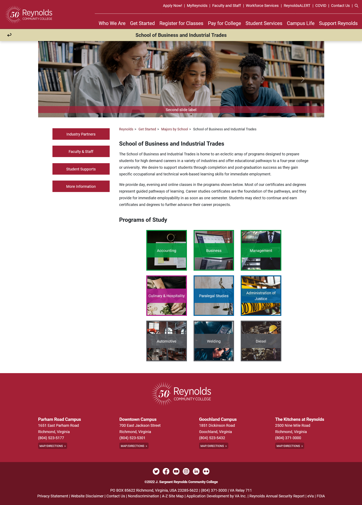
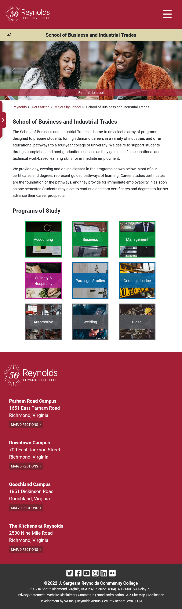
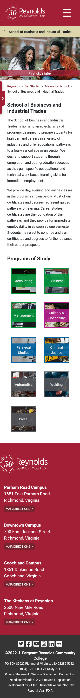
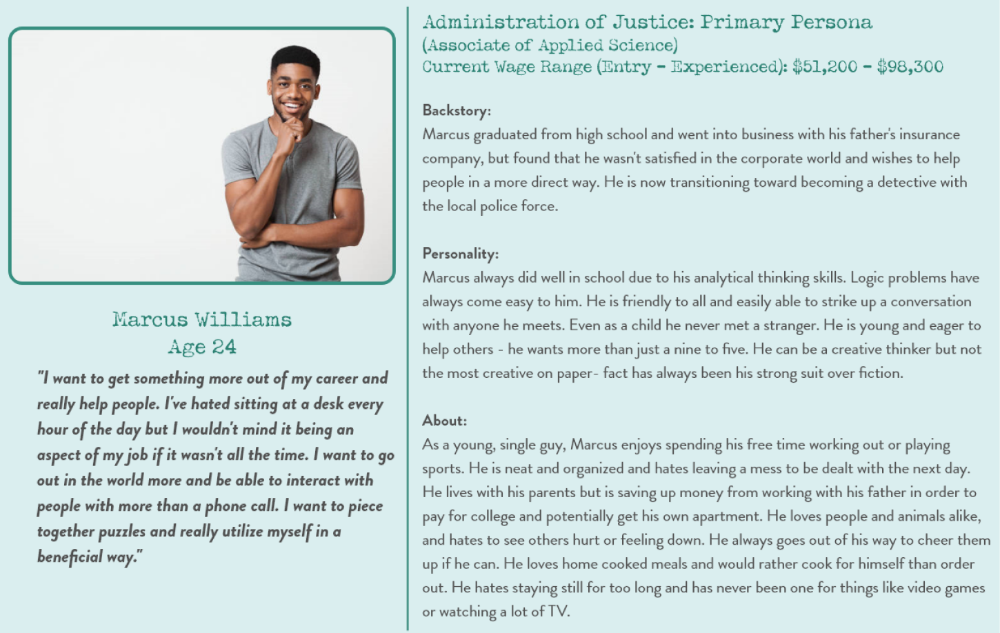
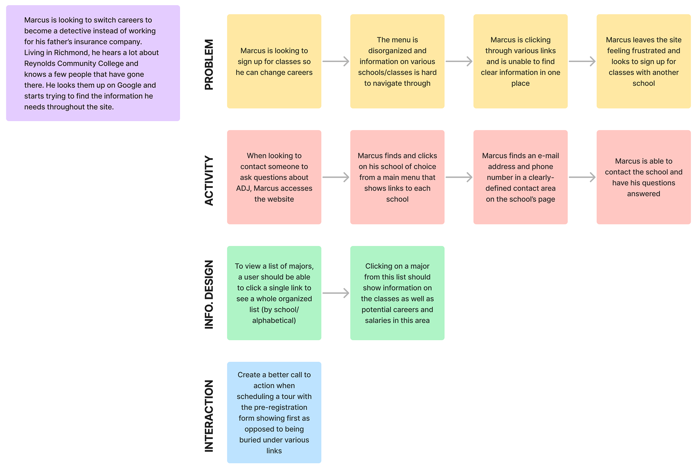
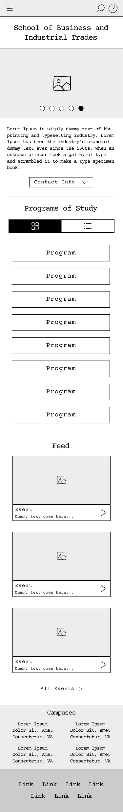
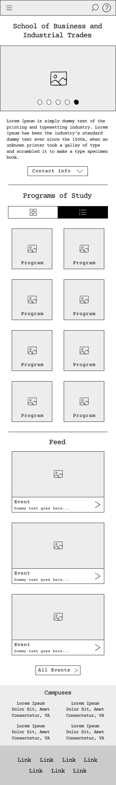
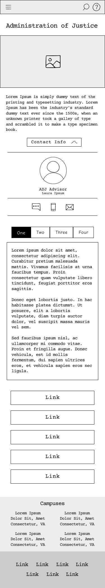

Click any image to view it fullscreen.

Homepage - desktop full view

Homepage - tablet full view

Homepage - mobile full view
Planning
Multiple personas and scenarios were created during our coursework. Shown below are the ones I created while conducting research before moving forward with wireframes.

A primary persona of a potential SBIT student I created during the research process.

Use case scenarios created in Figma based on the above persona.
Wireframes
My focus was mainly the SBIT homepage and the Administration of Justice program while in the early stages of coursework. Below is the wireframe I originally created for the homepage as well as this program - some changes were made before moving forward to the mockup.



Wireframes
My focus was mainly the SBIT homepage and the Administration of Justice program while in the early stages of coursework. Below is the wireframe I originally created for the homepage as well as this program - some changes were made before moving forward to the mockup.
Our original mockup created as a part of our class.
A copy of the original mockup, initially intended to reflect changes that had been made to the original site's header/footer before we were able to change these items ourselves. This was also used to explore different possibilities for a new header.